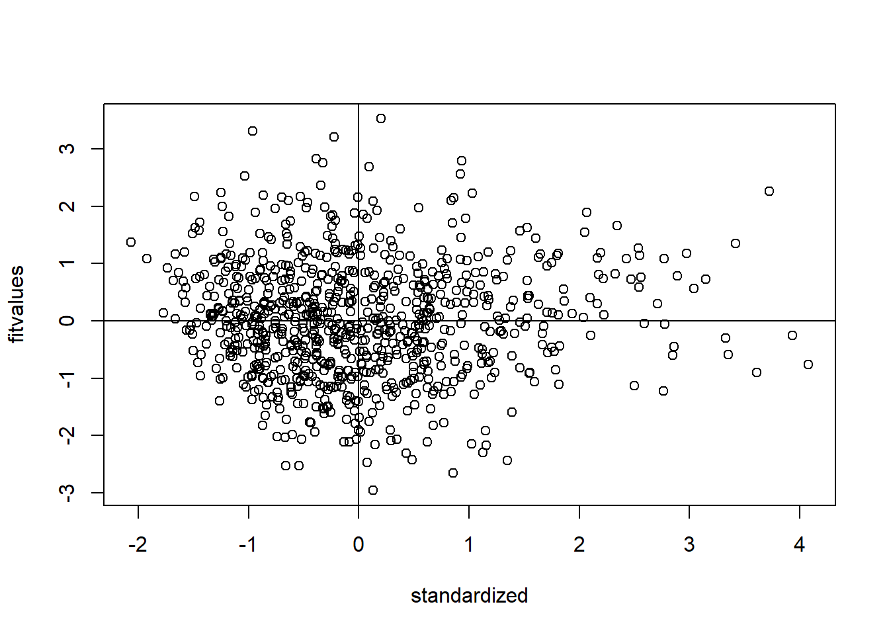

#Assumption check
Here is an example of what I usually do for cleaning once I get a “fresh” data. Also, I included the common assumption check that I used to check for normality, linearity, homogeneity, Homoscedasticity…
The code for assumption check was inspired by Dr. Erin Buchanan and her video series on SEM. Here is a link to her webpage.
###cleaning
## use other read functions as appropriate for file type
dict <- rio::import(file = "Data/DGS_S1_dictionary.xlsx") #dictionary
data <- read.csv(file = 'Data/DGS_S1_Deidentified For Analyses.csv', sep = ",") #data
##trim based on completion time (>180)
data <- data %>%
filter(Duration..in.seconds. >= 180)
data <- data[-c(1:2),-c(1:7)]
## Variable types
names <- dict %>%
filter(type == "character") %>%
pull(variable)
data[,names] <-
lapply(data[,names], as.character)
names <- dict %>%
filter(type == "factor") %>%
pull(variable)
data[,names] <-
lapply(data[,names], as.numeric) #factor variables are coded as numeric for codebook purposes
names <- dict %>%
filter(type == "numeric") %>%
pull(variable)
data[,names] <-
lapply(data[,names], as.numeric)
rm(names)
#remove failed attention check -55 participants from this process
data <- data %>%
filter(DGS_31 == 4) %>%
filter((DGS_53 == 2))
#prepare dataframe for different scales
DGS <- data[grep("DGS_1",colnames(data)):grep("DGS_75",colnames(data))] %>%
select(!c(DGS_31,DGS_53))
##remove people that gave 90% of the same answer in DGS
for(i in 1:7){
percent <- function(x){
sum((x == i)/length(x)*100)
}
number <- apply(DGS,1,percent)
data <- data[c(number<90),]
}
#function for checking percentage of missing data (unit=%)
percent_missing <- function(x){
sum(is.na((x))/length(x)*100)
}
missing_R <- apply(data,1,percent_missing)
table(missing_R)## missing_R
## 0 1.0989010989011 3.2967032967033 100
## 836 16 1 9#use if don't want imputation(turn off if I need imputation)
replace_rows <- subset(data, missing_R<=0)
data <- replace_rows##recode
#DGS recode
likert <- dict %>%
filter (value_label == "1 = Strongly disagree, 2 = Disagree, 3 = Somewhat disagree, 4 = Neither agree nor disagree, 5 = Somewhat agree, 6 = Agree, 7 = Strongly agree") %>%
pull(variable)
add_likert <- function(x) {
val_labels(x) <- c("Strongly disagree"= 1, "Disagree" = 2, "Somewhat disagree" = 3, "Neither agree nor disagree" = 4, "Somewhat agree" = 5, "Agree" = 6, "Strongly agree" = 7)
x
}
data <- data %>%
mutate_at(likert,
add_likert)
rm(likert, add_likert)
#HEXACO_C
likert <- dict %>%
filter (value_label == "1 = Strongly disagree, 2 = Somewhat disagree, 3 = Neither agree nor disagree, 4 = Somewhat agree, 5 = Strongly agree") %>%
pull(variable)
add_likert <- function(x) {
val_labels(x) <- c("Strongly disagree"= 1, "Somewhat disagree" = 2, "Neither agree nor disagree" = 3, "Somewhat agree" = 4, "Strongly agree" = 5)
x
}
data <- data %>%
mutate_at(likert,
add_likert)
rm(likert, add_likert)
## Reverse-scoring
reversed_items <- dict %>% #make a list of reversed items
filter (keying == -1) %>%
pull(variable)
data <- data %>% #reverse values in data
mutate_at(reversed_items,
reverse_labelled_values)
rm(reversed_items)
##scale construction
## Variable labels
var_label(data) <- dict %>%
select(variable, label) %>%
dict_to_list()
rm(extra)
##DGS
DGS <- dict %>%
filter (scale == "DGS") %>%
pull(variable)
data$DGS <- data %>%
select(all_of(DGS)) %>%
aggregate_and_document_scale()
##HEXACO_C
HEXACO_C <- dict %>%
filter (scale == "HEXACO_C") %>%
pull(variable)
data$HEXACO_C <- data %>%
select(all_of(HEXACO_C)) %>%
aggregate_and_document_scale()
###7 factors model
M7_1 <- dict %>%
filter (M7_concise == 1) %>%
pull(variable)
M7_2 <- dict %>%
filter (M7_concise == 2) %>%
pull(variable)
M7_3 <- dict %>%
filter (M7_concise == 3) %>%
pull(variable)
M7_4 <- dict %>%
filter (M7_concise == 4) %>%
pull(variable)
M7_5 <- dict %>%
filter (M7_concise == 5) %>%
pull(variable)
M7_6 <- dict %>%
filter (M7_concise == 6) %>%
pull(variable)
M7_7 <- dict %>%
filter (M7_concise == 7) %>%
pull(variable)
###7 factors model
data$M7_1 <- data %>%
select(all_of(M7_1)) %>%
aggregate_and_document_scale()
data$M7_2 <- data %>%
select(all_of(M7_2)) %>%
aggregate_and_document_scale()
data$M7_3 <- data %>%
select(all_of(M7_3)) %>%
aggregate_and_document_scale()
data$M7_4 <- data %>%
select(all_of(M7_4)) %>%
aggregate_and_document_scale()
data$M7_5 <- data %>%
select(all_of(M7_5)) %>%
aggregate_and_document_scale()
data$M7_6 <- data %>%
select(all_of(M7_6)) %>%
aggregate_and_document_scale()
data$M7_7 <- data %>%
select(all_of(M7_7)) %>%
aggregate_and_document_scale()## assumption check
random_variable <- rchisq(nrow(data), 7)
fake_model <- lm(random_variable ~ .,
data = data[ , -c(86:91)])
standardized <- rstudent(fake_model)
fitvalues <- scale(fake_model$fitted.values)
plot(fake_model,2)#check for linearity#We assume the the multivariate relationship between continuous variables is linear (i.e., no curved)
#There are many ways to test this, but we can use a QQ/PP Plot to examine for linearity
hist(standardized)#check for normality#We expect that the residuals are normally distributed
#Not that the *sample* is normally distributed
#Generally, SEM requires a large sample size, thus, buffering against normality deviations
{plot(standardized, fitvalues)
abline(v = 0)
abline(h = 0)
}#check for homogeneity + Homoscedasticity
#These assumptions are about equality of the variances
#We assume equal variances between groups for things like t-tests, ANOVA
#Here the assumption is equality in the spread of variance across predicted values
##rename
data_cleaned <- data
#prepare dataframe for different scales
DGS <- data_cleaned[grep("DGS_1",colnames(data_cleaned)):grep("DGS_75",colnames(data_cleaned))]
DGS <- DGS[,-c(grep("DGS_31",colnames(DGS)),grep("DGS_53",colnames(DGS)))]
HEXACO_C <- data_cleaned[grep("HEXACO_C_1",colnames(data_cleaned)):grep("HEXACO_C_10",colnames(data_cleaned))]